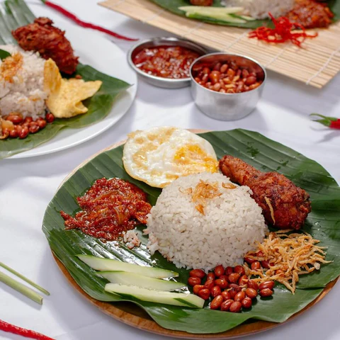
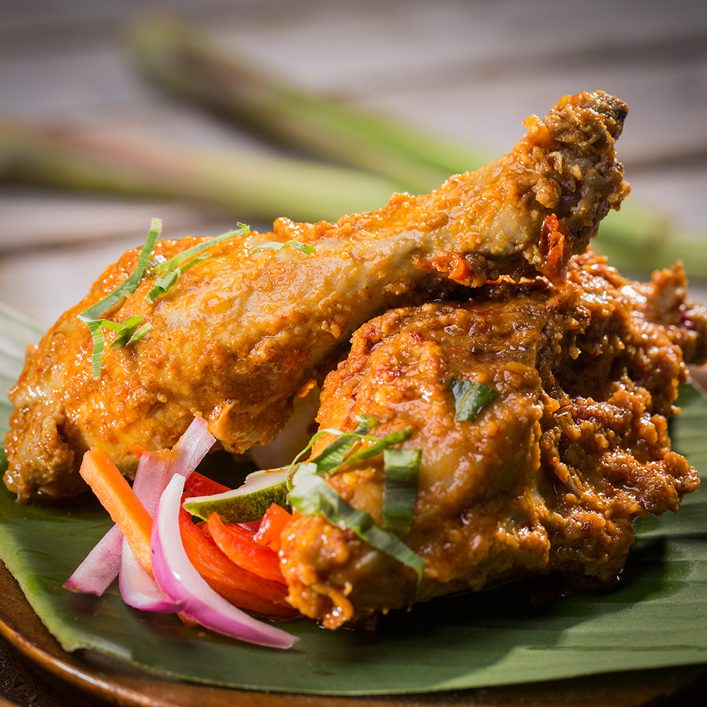
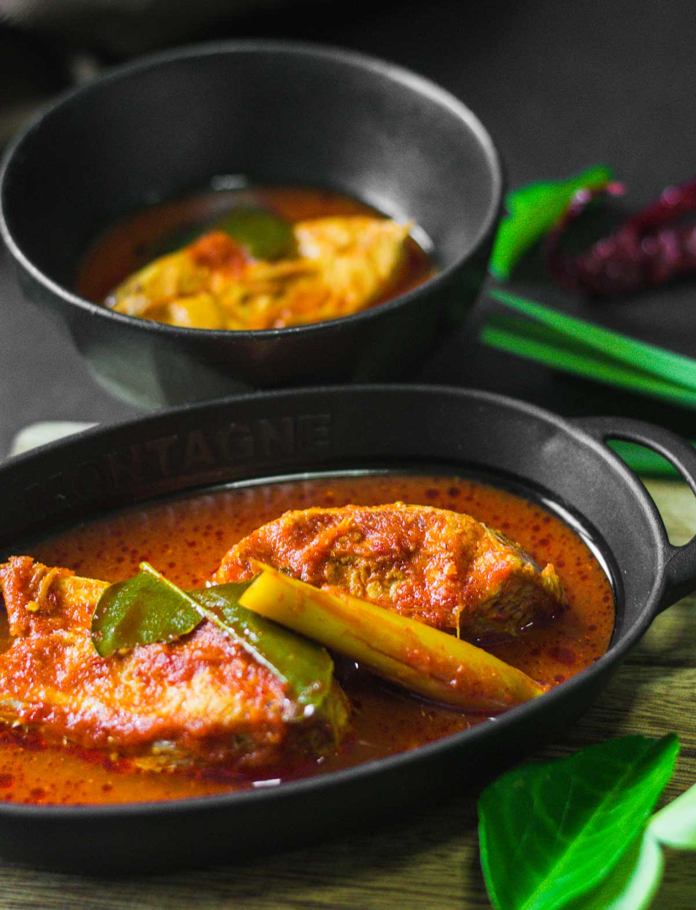

Authentic traditional Malay cooking is an interesting insight into the Malay culture’s heritage and cultural norms. What distinguishes Malay cuisine from the other major cultures in Malaysia (the Chinese and Indian cultures) are their use of fresh herbs, strong and tangy dried spices and aromatics, fermented seasonings, and not forgetting the all important coconut milk.

Fragrant rice cooked in coconut milk and pandan leaves, served with a side of sambal (a spicy paste), eggs and anchovies.

Rendang is a popular dish made with meat stewed in coconut milk and spices.

The main ingredients in asam pedas are usually seafood or freshwater fish. They are cooked in asam fruit juice with chilli and spices.